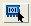

Summary of Common Tasks in Parasitic Browsing
Table 1 lists many of the tasks you can do from the Parasitics tab. See “Using the Net Parasitics Table” for more detailed instructions.
Task |
Procedure |
|
|---|---|---|
Export parasitic data to a file |
Choose File > Export Parasitics to export parasitic extraction data to a specified file that can be read into most spreadsheet programs. See “Saving Net Parasitics Data to CSV Format from Calibre RVE for PEX” for more information on the Export to CSV option. |
|
Display detailed information about a net. |
Select a
net and click |
|
Highlight a net in connected viewers. |
Select a
net, then click Also see “Internal Schematic Viewer”. |
|
Show details about the parasitics on a net. |
Double-click
a net, or select a net and click By default the detailed view tab is named with the layout net name. If source names are available and you want to use them, choose , choose the LVS/PERC/PEX category, and uncheck “Use the layout net name in PEX detailed parasitics tab.” |
|
Calculate point-to-point resistance |
In the detailed parasitics view, click Pt-to-Pt Res. See Session Tools in Calibre RVE for PEX. |
|
Calculate coupling capacitance to selected nets. |
Right-click a net and choose Coupling to Selected Nets, or use the Coupling control:
|
|
Search for nets and other design elements. |
Use the Find Nets control:
|
|
Select a net in the layout or schematic viewer. |
Click the
layout icon  or the
source icon |
|
Switch between using layout and source names. |
Use the dropdown control to the right of the icon to switch between the two choices. |
|
Create the victim file needed for Calibre xL inductance extraction. |
Choose Tools > Mutual Inductance. See “Selecting Nets for Mutual Inductance”. |
|